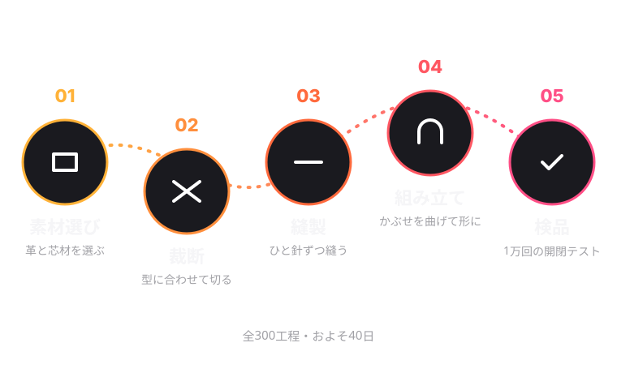

工房について
ひと針ずつ、
あたたかく。
ひなた鞄工房は、子どもたちの6年間に寄りそうランドセルをつくる、小さな工房です。
雨の日も、風の日も、ランドセルは子どもの背中で6年間を過ごします。重たい日も、さみしい日もあるかもしれない。だから私たちは、背負うたびに、ひなたのようなあたたかさを感じられる道具をつくりたい。Hinata という名前には、そんな想いを込めました。
大切にしていること
3つの約束。
01
軽いこと
1年生の体は、まだ小さい。素材の1グラムまで見直して、毎日の通学の負担を減らします。
02
こわれないこと
300の工程を職人が手で仕上げ、1万回のふたの開け閉めテストに合格したものだけをお届けします。
03
守ること
反射材、自動ロック、安全ナスカン。子どもが自分で気づかなくても、ランドセルが守ります。
ものづくり
ランドセルが、できるまで。
革を選んでから検品まで、ひとつのランドセルにかかる日数はおよそ40日。そのすべてを、ひなた鞄工房の中で行います。

工房長メッセージ
会社概要
Company Profile
- 会社名
- ひなた鞄工房株式会社（Hinata Kaban Kobo Inc.）※架空の企業です
- 設立
- 2012年4月1日
- 所在地
- 神奈川県藤沢市（架空）
- 代表者
- 代表取締役・工房長
- 従業員数
- 46名（うち職人28名、2026年11月現在）
- 事業内容
- ランドセル・学童用品の企画・製造・販売
ランドセルの修理、ミニランドセルへのリメイク - 店舗
- ひなた鞄工房 ショールーム、Hinata オンラインストア、全国試着会（いずれも架空）
あゆみ
あゆみ
小さな工房として創業
職人3人で、手縫いのランドセルづくりをはじめる。
6年間修理保証をスタート
どんな故障も卒業まで無償で直す仕組みをつくる。
ミニランドセル リメイクを開始
卒業したランドセルを、手のひらサイズの思い出に。
ショールームをオープン
工房の隣に、全カラーを試着できるショールームを開設。
Hinata Air 発表
ハニカム芯材を初めて採用し、1,050gを実現。